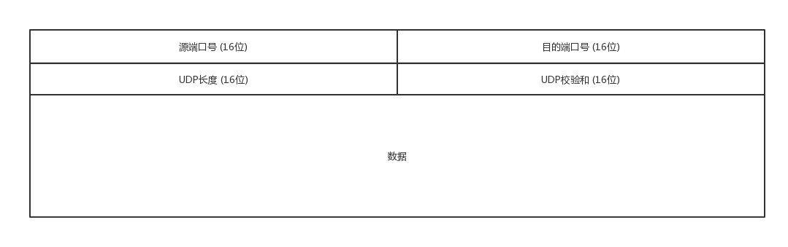
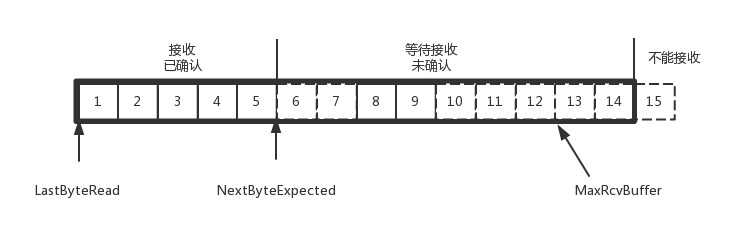
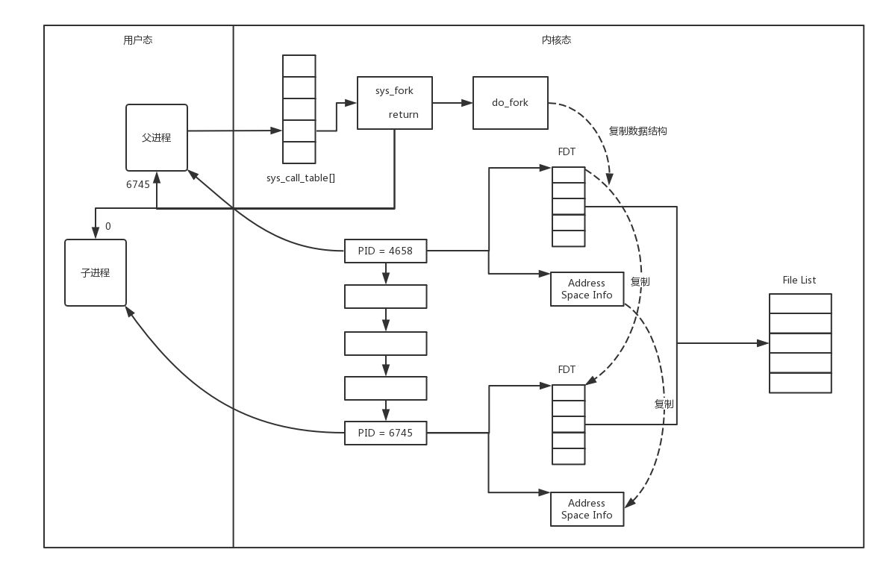

1. UDP协议#
1.1 UDP和TCP协议的区别#
| 类型 | 是否面向连接 | 传输可靠性 | 传输形式 | 传输效率 | 所需资源 | 应用场景 | 首部字节 |
|---|---|---|---|---|---|---|---|
| TCP | 面向连接 | 可靠 | 字节流 | 慢 | 多 | 要求通信数据可靠（文件传输） | 20-60 |
| UDP | 无连接 | 不可靠 | 数据报文段 | 快 | 少 | 要求通信速度高（视频直播） | 8字节 |
TCP是面向连接的，UDP无连接。
面向连接指，在互通之前，先建立连接，比如TCP三次握手，而UDP不会。建立连接是为了在客户端和服务端维护连接，而建立一定的数据结构来保证所谓的面向连接的特性。
TCP提供可靠支付，UDP不保证不丢失，不保证按顺序到达
TCP面向字节流，发送的时候发一个流。这是靠TCP自身的状态维护做的事情。
UDP继承了IP包的特性，不保证不丢失，不保证按顺序到达。
TCP具有拥塞控制，意识到丢包或者网络环境不好，会调整整个发送的速度的。UDP不做调整。
TCP有状态服务，精确记录了发送了没有，接收了没有，以及该接收哪一个了这样的信息。
如果MAC层定义了本地局域网的传输行为，IP层定义了整个网络端到端的传输行为，这两层基本定义了：网络传输是以包为单位的；二层叫帧，网络层叫包，传输层叫段。包单独传输，自行选段，在不同的设备封装解封装，不保证到达。
1.2 UDP 包头#
接收的机器通过看IP头里面的8位协议位来确定数据到底是通过TCP还是UDP来传的。
无论应用程序写的是用TCP传数据还是UDP传数据，都要监听一个端口。正是这个端口用来区分应用程序，无论是TCP还是UDP都有端口号，根据端口号来将数据交给相应的应用程序。

1.3 UDP 使用场景#
需要资源少，在网络情况比较好的内网，或者对于丢包不敏感的应用
DHCP 就是基于 UDP 协议的。一般的获取 IP 地址都是内网请求，而且一次获取不到 IP 又没事，过一会儿还有机会。我们讲过 PXE 可以在启动的时候自动安装操作系统，操作系统镜像的下载使用的 TFTP，这个也是基于 UDP 协议的。在还没有操作系统的时候，客户端拥有的资源很少，不适合维护一个复杂的状态机，而是因为是内网，一般也没啥问题。
- 不需要一对一沟通，建立连接，而是可以广播的应用
UDP 的不面向连接的功能，可以使得可以承载广播或者多播的协议。DHCP 就是一种广播的形式，就是基于 UDP 协议的，而广播包的格式前面说过了。
对于多播，我们在讲 IP 地址的时候，讲过一个 D 类地址，也即组播地址，使用这个地址，可以将包组播给一批机器。当一台机器上的某个进程想监听某个组播地址的时候，需要发送 IGMP 包，所在网络的路由器就能收到这个包，知道有个机器上有个进程在监听这个组播地址。当路由器收到这个组播地址的时候，会将包转发给这台机器，这样就实现了跨路由器的组播。
- 需要处理速度快，时延低，可以容忍少数丢包，但是要求即便网络拥塞，也毫不退缩，一往无前的时候
同理，UDP 简单、处理速度快，不像 TCP 那样，操这么多的心，各种重传啊，保证顺序啊，前面的不收到，后面的没法处理啊。不然等这些事情做完了，时延早就上去了。而 TCP 在网络不好出现丢包的时候，拥塞控制策略会主动的退缩，降低发送速度，这就相当于本来环境就差，还自断臂膀，用户本来就卡，这下更卡了。
当前很多应用都是要求低时延的，它们可不想用 TCP 如此复杂的机制，而是想根据自己的场景，实现自己的可靠和连接保证。例如，如果应用自己觉得，有的包丢了就丢了，没必要重传了，就可以算了，有的比较重要，则应用自己重传，而不依赖于 TCP。有的前面的包没到，后面的包到了，那就先给客户展示后面的嘛，干嘛非得等到齐了呢？如果网络不好，丢了包，那不能退缩啊，要尽快传啊，速度不能降下来啊，要挤占带宽，抢在客户失去耐心之前到达。
1.4 UDP的应用实例#
1.4.1 网页或者APP的访问#
原来访问网页和手机 APP 都是基于 HTTP 协议的。HTTP 协议是基于 TCP 的，建立连接都需要多次交互，对于时延比较大的目前主流的移动互联网来讲，建立一次连接需要的时间会比较长，然而既然是移动中，TCP 可能还会断了重连，也是很耗时的。而且目前的 HTTP 协议，往往采取多个数据通道共享一个连接的情况，这样本来为了加快传输速度，但是 TCP 的严格顺序策略使得哪怕共享通道，前一个不来，后一个和前一个即便没关系，也要等着，时延也会加大。
而QUIC (Quick UDP Internet Connections)是谷歌提出的一种基于UDP改进的通信协议，QUIC 在应用层上，会自己实现快速连接建立、减少重传时延，自适应拥塞控制，是应用层“城会玩”的代表。这一节主要是讲 UDP，QUIC 我们放到应用层去讲。
1.4.2 流媒体的协议#
现在直播比较火，直播协议多使用 RTMP，这个协议我们后面的章节也会讲，而这个 RTMP 协议也是基于 TCP 的。TCP 的严格顺序传输要保证前一个收到了，下一个才能确认，如果前一个收不到，下一个就算包已经收到了，在缓存里面，也需要等着。对于直播来讲，这显然是不合适的，因为老的视频帧丢了其实也就丢了，就算再传过来用户也不在意了，他们要看新的了，如果老是没来就等着，卡顿了，新的也看不了，那就会丢失客户，所以直播，实时性比较比较重要，宁可丢包，也不要卡顿的。
另外，对于丢包，其实对于视频播放来讲，有的包可以丢，有的包不能丢，因为视频的连续帧里面，有的帧重要，有的不重要，如果必须要丢包，隔几个帧丢一个，其实看视频的人不会感知，但是如果连续丢帧，就会感知了，因而在网络不好的情况下，应用希望选择性的丢帧。
还有就是当网络不好的时候，TCP 协议会主动降低发送速度，这对本来当时就卡的看视频来讲是要命的，应该应用层马上重传，而不是主动让步。因而，很多直播应用，都基于 UDP 实现了自己的视频传输协议。
1.4.3 实时游戏#
游戏有一个特点，就是实时性比较高。快一秒你干掉别人，慢一秒你被别人爆头，所以很多职业玩家会买非常专业的鼠标和键盘，争分夺秒。
因而，实时游戏中客户端和服务端要建立长连接，来保证实时传输。但是游戏玩家很多，服务器却不多。由于维护 TCP 连接需要在内核维护一些数据结构，因而一台机器能够支撑的 TCP 连接数目是有限的，然后 UDP 由于是没有连接的，在异步 IO 机制引入之前，常常是应对海量客户端连接的策略。
另外还是 TCP 的强顺序问题，对战的游戏，对网络的要求很简单，玩家通过客户端发送给服务器鼠标和键盘行走的位置，服务器会处理每个用户发送过来的所有场景，处理完再返回给客户端，客户端解析响应，渲染最新的场景展示给玩家。
如果出现一个数据包丢失，所有事情都需要停下来等待这个数据包重发。客户端会出现等待接收数据，然而玩家并不关心过期的数据，激战中卡 1 秒，等能动了都已经死了。游戏对实时要求较为严格的情况下，采用自定义的可靠 UDP 协议，自定义重传策略，能够把丢包产生的延迟降到最低，尽量减少网络问题对游戏性造成的影响。
1.4.4 物联网#
一方面，物联网领域终端资源少，很可能只是个内存非常小的嵌入式系统，而维护 TCP 协议代价太大；另一方面，物联网对实时性要求也很高，而 TCP 还是因为上面的那些原因导致时延大。Google 旗下的 Nest 建立 Thread Group，推出了物联网通信协议 Thread，就是基于 UDP 协议的。
1.4.5 移动通信领域#
4G网络中移动流量上网的数据面对的协议GTP-U就是基于UDP的。
2. TCP协议#
更倾向于网络环境是恶劣的，丢包，乱序，重传，拥塞都是常有的事情，很有可能送达不了，所以要从算法层面来保证可靠性。
2.1 TCP包头格式#

- 源端口号-16
- 目的端口号-16
源端口号和目标端口号，来确定从哪发送，要发送到哪里去。
- 序号-32
给包编序号，解决包的乱序问题
- 确认序号-32
发出去的包要有确认，来确认对方收到了。如果没有收到就需要重发，直到送达为止
- 首部长度-4
- 保留位-6
下述的状态位的存在是因为TCP是面向连接的，双方要维护连接的状态，这些带状态位的包的发送，会引起双方的状态变更。
- URG
- ACK
回复
- PSH
- RST
重新连接
- SYN
发起一个连接
- FIN
结束连接
- 窗口大小-16
TCP要做流量控制，通信双方各声明一个窗口，标识自己当前的处理能力，保持接收和处理的速度适宜。
- 校验和-16
- 紧急指针-16
- 选项
- 数据
2.2 TCP三次握手#
客户端–发送带有 SYN 标志的数据包–一次握手–服务端
服务端–发送带有 SYN/ACK 标志的数据包–二次握手–客户端
传回SYN的原因，确保就是传过来的那个信息
客户端–发送带有带有 ACK 标志的数据包–三次握手–服务端
第一次握手：Client 什么都不能确认；Server 确认了对方发送正常
第二次握手：Client 确认了：自己发送、接收正常，对方发送、接收正常；Server 确认了：自己接收正常，对方发送正常
第三次握手：Client 确认了：自己发送、接收正常，对方发送、接收正常；Server 确认了：自己发送、接收正常，对方发送接收正常
三次握手除了建立双方的连接以外，还要解决TCP包的序号问题。每个连接都要有不同的序号，这个序号队列的起始序号是随着时间变化的，这样子可以避免有一个包到的有一点晚的问题。
我们在做设计的时候，会开启keepalive机制，即使没有真实的数据包，也会有探活包来保证连接的保持。

一开始，客户端和服务端都处于 CLOSED 状态。先是服务端主动监听某个端口，处于 LISTEN 状态。然后客户端主动发起连接 SYN，之后处于 SYN-SENT 状态。服务端收到发起的连接，返回 SYN，并且 ACK 客户端的 SYN，之后处于 SYN-RCVD 状态。客户端收到服务端发送的 SYN 和 ACK 之后，发送 ACK 的 ACK，之后处于 ESTABLISHED 状态，因为它一发一收成功了。服务端收到 ACK 的 ACK 之后，处于 ESTABLISHED 状态，因为它也一发一收了。
2.3 TCP四次挥手#
以下是四次挥手的状态时序图

断开的时候，我们可以看到，当 A 说“不玩了”，就进入 FIN_WAIT_1 的状态，B 收到“A 不玩”的消息后，发送知道了，就进入 CLOSE_WAIT 的状态。
A 收到“B 说知道了”，就进入 FIN_WAIT_2 的状态，如果这个时候 B 直接跑路，则 A 将永远在这个状态。TCP 协议里面并没有对这个状态的处理，但是 Linux 有，可以调整 tcp_fin_timeout 这个参数，设置一个超时时间。
如果 B 没有跑路，发送了“B 也不玩了”的请求到达 A 时，A 发送“知道 B 也不玩了”的 ACK 后，从 FIN_WAIT_2 状态结束，按说 A 可以跑路了，但是最后的这个 ACK 万一 B 收不到呢？则 B 会重新发一个“B 不玩了”，这个时候 A 已经跑路了的话，B 就再也收不到 ACK 了，因而 TCP 协议要求 A 最后等待一段时间 TIME_WAIT，这个时间要足够长，长到如果 B 没收到 ACK 的话，“B 说不玩了”会重发的，A 会重新发一个 ACK 并且足够时间到达 B。
A 直接跑路还有一个问题是，A 的端口就直接空出来了，但是 B 不知道，B 原来发过的很多包很可能还在路上，如果 A 的端口被一个新的应用占用了，这个新的应用会收到上个连接中 B 发过来的包，虽然序列号是重新生成的，但是这里要上一个双保险，防止产生混乱，因而也需要等足够长的时间，等到原来 B 发送的所有的包都死翘翘，再空出端口来。
等待的时间设为 2MSL，MSL是Maximum Segment Lifetime, 报文最大生存时间。，它是任何报文在网络上存在的最长时间，超过这个时间报文将被丢弃。因为 TCP 报文基于是 IP 协议的，而 IP 头中有一个 TTL 域，是 IP 数据报可以经过的最大路由数，每经过一个处理他的路由器此值就减 1，当此值为 0 则数据报将被丢弃，同时发送 ICMP 报文通知源主机。协议规定 MSL 为 2 分钟，实际应用中常用的是 30 秒，1 分钟和 2 分钟等。
2.4 TCP状态机#

2.5 重传策略#
TCP传输的时候，每一个包都有一个ID。在建立连接的时候，会商定起始的ID是什么，然后按照ID一个个发送。为了保证不丢包，对于发送的包都要进行应答，但这个应答并不是一个一个来的，而是会应答某个之前的ID，表示都收到了，这种模式称为累计确认 或者累计应答。
2.5.1 发送端缓存结构#
为了记录所有发送的包和接收的包，TCP 也需要发送端和接收端分别都有缓存来保存这些记录。发送端的缓存里是按照包的 ID 一个个排列，根据处理的情况分成四个部分。
第一部分：发送了并且已经确认的。这部分就是你交代下属的，并且也做完了的，应该划掉的。
第二部分：发送了并且尚未确认的。这部分是你交代下属的，但是还没做完的，需要等待做完的回复之后，才能划掉。
第三部分：没有发送，但是已经等待发送的。这部分是你还没有交代给下属，但是马上就要交代的。
第四部分：没有发送，并且暂时还不会发送的。这部分是你还没有交代给下属，而且暂时还不会交代给下属的。
区分第三第四部分的原因是为了进行流量控制 - 窗口大小。在TCP里，接收端会给发送端报一个窗口的大小，叫做Advertised Window. 这个窗口的大小应该等于上面的第二部分加上第三部分，超过了这个大小的接收端没法接收。
因此发送端需要保持以下的数据结构：

- LastByteAcked：第一部分和第二部分的分界线
- LastByteSent：第二部分和第三部分的分界线
- LastByteAcked + AdvertisedWindow：第三部分和第四部分的分界线
2.5.2 接收端缓存结构#
第一部分：接受并且确认过的。也就是我领导交代给我，并且我做完的。
第二部分：还没接收，但是马上就能接收的。也即是我自己的能够接受的最大工作量。
第三部分：还没接收，也没法接收的。也即超过工作量的部分，实在做不完。

- MaxRcvBuffer：最大缓存的量；
- LastByteRead 之后是已经接收了，但是还没被应用层读取的；
- NextByteExpected 是第一部分和第二部分的分界线。
第二部分的窗口有多大呢？
NextByteExpected 和 LastByteRead 的差其实是还没被应用层读取的部分占用掉的 MaxRcvBuffer 的量，我们定义为 A。AdvertisedWindow 其实是 MaxRcvBuffer 减去 A。也就是：AdvertisedWindow=MaxRcvBuffer-((NextByteExpected-1)-LastByteRead)。那第二部分和第三部分的分界线在哪里呢？NextByteExpected 加 AdvertisedWindow 就是第二部分和第三部分的分界线，其实也就是 LastByteRead 加上 MaxRcvBuffer。其中第二部分里面，由于受到的包可能不是顺序的，会出现空挡，只有和第一部分连续的，可以马上进行回复，中间空着的部分需要等待，哪怕后面的已经来了。
2.5.3 顺序问题和丢包问题#
超时重试： 对于每一个发送了但是没有ACK的包，都设定一个定时器，超过了一定时间就重新尝试。这是时间不宜太短，时间必须大于往返时间RTT(Round trip time)，否则会引起不必要的重传。
估计往返时间，需要 TCP 通过采样 RTT 的时间，然后进行加权平均，算出一个值，而且这个值还是要不断变化的，因为网络状况不断的变化。除了采样 RTT，还要采样 RTT 的波动范围，计算出一个估计的超时时间。由于重传时间是不断变化的，我们称为自适应重传算法
超时间隔加倍：每当遇到一次超时重传的时候，都会将下一次超时时间间隔设为先前值的两倍。两次超时，就说明网络环境差，不宜频繁反复发送。
快速重传机制：有一个可以快速重传的机制，当接收方收到一个序号大于下一个所期望的报文段时，就检测到了数据流中的一个间格，于是发送三个冗余的 ACK，客户端收到后，就在定时器过期之前，重传丢失的报文段。
另外一种方式成为Selective Acknowledgment(SACK), ）。这种方式需要在 TCP 头里加一个 SACK 的东西，可以将缓存的地图发送给发送方。例如可以发送 ACK6、SACK8、SACK9，有了地图，发送方一下子就能看出来是 7 丢了。
2.5.4 流量控制问题#
在对于包的确认中，会携带一个窗口的大小。
我们先假设窗口不变的情况，窗口始终为 9。4 的确认来的时候，会右移一个，这个时候第 13 个包也可以发送了。

这个时候，假设发送端发送过猛，会将第三部分的 10、11、12、13 全部发送完毕，之后就停止发送了，未发送可发送部分为 0。

当对于包 5 的确认到达的时候，在客户端相当于窗口再滑动了一格，这个时候，才可以有更多的包可以发送了，例如第 14 个包才可以发送。

如果接收方实在处理的太慢，导致缓存中没有空间了，可以通过确认信息修改窗口的大小，甚至可以设置为 0，则发送方将暂时停止发送。
我们假设一个极端情况，接收端的应用一直不读取缓存中的数据，当数据包 6 确认后，窗口大小就不能再是 9 了，就要缩小一个变为 8。

这个新的窗口 8 通过 6 的确认消息到达发送端的时候，你会发现窗口没有平行右移，而是仅仅左面的边右移了，窗口的大小从 9 改成了 8。

如果接收端还是一直不处理数据，则随着确认的包越来越多，窗口越来越小，直到为 0。

当这个窗口通过包 14 的确认到达发送端的时候，发送端的窗口也调整为 0，停止发送。

如果这样的话，发送方会定时发送窗口探测数据包，看是否有机会调整窗口的大小。当接收方比较慢的时候，要防止低能窗口综合征，别空出一个字节来就赶快告诉发送方，然后马上又填满了，可以当窗口太小的时候，不更新窗口，直到达到一定大小，或者缓冲区一半为空，才更新窗口。
2.5.5 拥塞控制#
通过控制窗口的大小来控制，拥塞窗口是防止将网络塞满。类比水管： 水管里面的水量 = 水管粗细 x 水管长度。 同理，网络通道的容量 = 带宽 x 往返延迟。如果我们设置发送窗口，使得发送但未确认的包为通道的容量，就能够撑满整个管道。

如图所示，假设往返时间为 8s，去 4s，回 4s，每秒发送一个包，每个包 1024byte。已经过去了 8s，则 8 个包都发出去了，其中前 4 个包已经到达接收端，但是 ACK 还没有返回，不能算发送成功。5-8 后四个包还在路上，还没被接收。这个时候，整个管道正好撑满，在发送端，已发送未确认的为 8 个包，正好等于带宽，也即每秒发送 1 个包，乘以来回时间 8s。
如果我们在这个基础上再调大窗口，使得单位时间内更多的包可以发送，会出现什么现象呢？
我们来想，原来发送一个包，从一端到达另一端，假设一共经过四个设备，每个设备处理一个包时间耗费 1s，所以到达另一端需要耗费 4s，如果发送的更加快速，则单位时间内，会有更多的包到达这些中间设备，这些设备还是只能每秒处理一个包的话，多出来的包就会被丢弃，这是我们不想看到的。
这个时候，我们可以想其他的办法，例如这个四个设备本来每秒处理一个包，但是我们在这些设备上加缓存，处理不过来的在队列里面排着，这样包就不会丢失，但是缺点是会增加时延，这个缓存的包，4s 肯定到达不了接收端了，如果时延达到一定程度，就会超时重传，也是我们不想看到的。
于是 TCP 的拥塞控制主要来避免两种现象，包丢失以及超时重传。一旦发生了这种现象，就说明发送速度太快了，TCP采用慢启动来避免发送速度太快的现象。
一条 TCP 连接开始，cwnd 设置为一个报文段，一次只能发送一个；当收到这一个确认的时候，cwnd 加一，于是一次能够发送两个；当这两个的确认到来的时候，每个确认 cwnd 加一，两个确认 cwnd 加二，于是一次能够发送四个；当这四个的确认到来的时候，每个确认 cwnd 加一，四个确认 cwnd 加四，于是一次能够发送八个。可以看出这是呈指数性增长的。
在增长到ssthresh值-65535字节的时候，会减速变成线性增长。
每收到一个确认后，cwnd 增加 1/cwnd，我们接着上面的过程来，一次发送八个，当八个确认到来的时候，每个确认增加 1/8，八个确认一共 cwnd 增加 1，于是一次能够发送九个，变成了线性增长。
采用快速重传算法解决丢包问题，当接收端发现丢了一个中间包的时候，发送三次前一个包的 ACK，于是发送端就会快速的重传，不必等待超时再重传。TCP 认为这种情况不严重，因为大部分没丢，只丢了一小部分，cwnd 减半为 cwnd/2，然后 sshthresh = cwnd，当三个包返回的时候，cwnd = sshthresh + 3，也就是没有一夜回到解放前，而是还在比较高的值，呈线性增长。
但是TCP的拥塞控制存在问题：
- 丢包并不代表着通道满了，也可能是管子本来就漏水。例如公网上带宽不满也会丢包，这个时候就认为拥塞了，退缩了，其实是不对的。
- TCP 的拥塞控制要等到将中间设备都填充满了，才发生丢包，从而降低速度，这时候已经晚了。其实 TCP 只要填满管道就可以了，不应该接着填，直到连缓存也填满。
为了解决这个问题，就有了TCP BBR拥塞算法，企图找到一个平衡点，通过不断加快发送速度，将管道填满，但是不填满中间设备的缓存，因为这样时延会增加，在这个平衡点可以达到高带宽和低时延的平衡。

3. 套接字Socket#
Socket编程是基于TCP和UDP协议的。Socket编程进行的是端到端的通信，往往意识不到中间经过了多少局域网、路由器，因而能够设置的参数是在端到端协议智商的网络层和传输层上。
网络层： 指定是IPV4(AF_INET)还是IPV6(AF_INET6).
传输层： 指定是TCP(SOCK_STREAM)还是UDP(SOCK_DGRAM)。
3.1 基于TCP协议的Socket程序函数调用过程#
首先是两端要创建Socket，这之后
TCP 的服务端要先监听一个端口，一般是先调用 bind 函数，给这个 Socket 赋予一个 IP 地址和端口。为什么需要端口呢？要知道，你写的是一个应用程序，当一个网络包来的时候，内核要通过 TCP 头里面的这个端口，来找到你这个应用程序，把包给你。为什么要 IP 地址呢？有时候，一台机器会有多个网卡，也就会有多个 IP 地址，你可以选择监听所有的网卡，也可以选择监听一个网卡，这样，只有发给这个网卡的包，才会给你。
当服务端有了 IP 和端口号，就可以调用 listen 函数进行监听。在 TCP 的状态图里面，有一个 listen 状态，当调用这个函数之后，服务端就进入了这个状态，这个时候客户端就可以发起连接了。
在内核中，为每个 Socket 维护两个队列。一个是已经建立了连接的队列，这时候连接三次握手已经完毕，处于 established 状态；一个是还没有完全建立连接的队列，这个时候三次握手还没完成，处于 syn_rcvd 的状态。
接下来，服务端调用Accept函数，拿出一个已经完成的连接进行处理。如果还没有完成，就要等着。
在服务端等待的时候，客户端可以通过 connect 函数发起连接。先在参数中指明要连接的 IP 地址和端口号，然后开始发起三次握手。内核会给客户端分配一个临时的端口。一旦握手成功，服务端的 accept 就会返回另一个 Socket。注意**监听的socket和真正用来传数据的Socket是两个，一个叫做监听Socket，一个叫做已连接Socket。
连接建立成功之后，双方开始通过read和write函数来读写数据，就像往一个文件流里面写东西一样。
下图是基于TCP协议的Socket程序函数调用过程。

说 TCP 的 Socket 就是一个文件流，是非常准确的。因为，Socket 在 Linux 中就是以文件的形式存在的。除此之外，还存在文件描述符。写入和读出，也是通过文件描述符。
在内核中，Socket 是一个文件，那对应就有文件描述符。每一个进程都有一个数据结构 task_struct，里面指向一个文件描述符数组，来列出这个进程打开的所有文件的文件描述符。文件描述符是一个整数，是这个数组的下标。
这个数组中的内容是一个指针，指向内核中所有打开的文件的列表。既然是一个文件，就会有一个 inode，只不过 Socket 对应的 inode 不像真正的文件系统一样，保存在硬盘上的，而是在内存中的。在这个 inode 中，指向了 Socket 在内核中的 Socket 结构。
在这个结构里面，主要是两个队列，一个是发送队列，一个是接收队列。在这两个队列里面保存的是一个缓存sk_buff.这个缓存里面能够看到完整的包的结构。

3.2 基于UDP协议的Socket程序函数调用过程#
和TCP协议的Socket编程相比，不同在于UDP是无连接的，不需要三次握手，也不需要调用listen和connect，但是UDP的交互仍然需要IP和端口号，因此也需要bind。UDP是没有维护连接状态的，因为不需要每对连接建立一组socket，而是只要有一个socket，就能够和多个客户端通信。也正是因为没有连接状态，每次通信的时候，都需要调用sendto和recvfrom，都可以传入IP地址和端口。

3.3 服务器最大连接数#
{本机 IP, 本机端口, 对端 IP, 对端端口}
服务器通常固定在某个本地端口上监听，等待客户端的连接请求。因此，服务端端 TCP 连接四元组中只有对端 IP, 也就是客户端的 IP 和对端的端口，也即客户端的端口是可变的，因此，最大 TCP 连接数 = 客户端 IP 数×客户端端口数。对 IPv4，客户端的 IP 数最多为 2 的 32 次方，客户端的端口数最多为 2 的 16 次方，也就是服务端单机最大 TCP 连接数，约为 2 的 48 次方。
当然，服务端最大并发 TCP 连接数远不能达到理论上限。首先主要是文件描述符的限制，，按照上面的原理，Socket 都是文件，所以首先要通过 ulimit 配置文件描述符的数目；另一个限制是内存，按照上面的数据结构，每个TCP连接都要占用一定的内存，操作系统是有限的。
因此需要寻找方法去降低每个项目消耗的资源数目
3.3.1 多进程方式#
这就相当于你是一个代理，在那里监听来的请求。一旦建立了一个连接，就会有一个已连接 Socket，这时候你可以创建一个子进程，然后将基于已连接 Socket 的交互交给这个新的子进程来做。就像来了一个新的项目，但是项目不一定是你自己做，可以再注册一家子公司，招点人，然后把项目转包给这家子公司做，以后对接就交给这家子公司了，你又可以去接新的项目了。
在linux中使用fork来做的。

因为复制了文件描述符列表，而文件描述符都是指向整个内核统一的打开文件列表的，因而父进程刚才因为 accept 创建的已连接 Socket 也是一个文件描述符，同样也会被子进程获得。
接下来，子进程就可以通过这个已连接 Socket 和客户端进行互通了，当通信完毕之后，就可以退出进程，那父进程如何知道子进程干完了项目，要退出呢？还记得 fork 返回的时候，如果是整数就是父进程吗？这个整数就是子进程的 ID，父进程可以通过这个 ID 查看子进程是否完成项目，是否需要退出。
3.3.2 多线程方式#
相当于不成立子公司了，而是在公司里成立新的项目组。在 Linux 下，通过 pthread_create 创建一个线程，也是调用 do_fork。不同的是，虽然新的线程在 task 列表会新创建一项，但是很多资源，例如文件描述符列表、进程空间，还是共享的，只不过多了一个引用而已。
上面基于进程或者线程模型的，其实还是有问题的。新到来一个 TCP 连接，就需要分配一个进程或者线程。一台机器无法创建很多进程或者线程。有个C10k. ，它的意思是一台机器要维护 1 万个连接，就要创建 1 万个进程或者线程，那么操作系统是无法承受的。如果维持 1 亿用户在线需要 10 万台服务器，成本也太高了。
3.3.3 IO多路复用，一个线程维护多个Socket#
即一个线程维护多个Socket。 由于 Socket 是文件描述符，因而某个线程盯的所有的 Socket，都放在一个文件描述符集合 fd_set 中，这就是项目进度墙。，然后调用 select 函数来监听文件描述符集合是否有变化。一旦有变化，就会依次查看每个文件描述符。那些发生变化的文件描述符在 fd_set 对应的位都设为 1，表示 Socket 可读或者可写，从而可以进行读写操作，然后再调用 select，接着盯着下一轮的变化。。
3.3.4 IO多路复用，subscribe/publish模式#
上面 select 函数还是有问题的，因为每次 Socket 所在的文件描述符集合中有 Socket 发生变化的时候，都需要通过轮询的方式，也就是需要将全部项目都过一遍的方式来查看进度，这大大影响了一个项目组能够支撑的最大的项目数量。因而使用 select，能够同时盯的项目数量由 FD_SETSIZE 限制。
如果改成事件通知的方式，情况就会好很多，项目组不需要通过轮询挨个盯着这些项目，而是当项目进度发生变化的时候，主动通知项目组，然后项目组再根据项目进展情况做相应的操作。
能完成这件事情的函数叫 epoll，它在内核中的实现不是通过轮询的方式，而是通过注册 callback 函数的方式，当某个文件描述符发送变化的时候，就会主动通知。

如图所示，假设进程打开了 Socket m, n, x 等多个文件描述符，现在需要通过 epoll 来监听是否这些 Socket 都有事件发生。其中 epoll_create 创建一个 epoll 对象，也是一个文件，也对应一个文件描述符，同样也对应着打开文件列表中的一项。在这项里面有一个红黑树，在红黑树里，要保存这个 epoll 要监听的所有 Socket。
当 epoll_ctl 添加一个 Socket 的时候，其实是加入这个红黑树，同时红黑树里面的节点指向一个结构，将这个结构挂在被监听的 Socket 的事件列表中。当一个 Socket 来了一个事件的时候，可以从这个列表中得到 epoll 对象，并调用 call back 通知它。
这种通知方式使得监听的 Socket 数据增加的时候，效率不会大幅度降低，能够同时监听的 Socket 的数目也非常的多了。上限就为系统定义的、进程打开的最大文件描述符个数。因而，epoll 被称为解决 C10K 问题的利器。